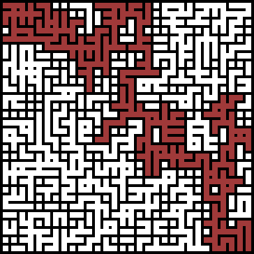

⬑ Liste aller flipped lectures. — Algorithmen und Datenstrukturen
Materialsammlung
 Auf dieser Seite findet ihr diverse Materialien zur Vorlesungen. Vorlesungsvideos für flipped lectures findet ihr auf einer eigenen Seite.
Wir werden einen signifikanter Teil der Vorlesung mit »neuen Medien« bestreiten, diese sind hier gesammelt. Prüfungsrelevant ist alles, was in der Vorlesung bzw. den Fragestunden behandelt wurde, aber nicht unbedingt alles was hier verlinkt ist.
Wenn ihr auf etwas interessantes gestoßen seid, von dem auch eure Mitstudis profitieren könnten, nehmen wir das gerne in die Liste auf!
Quellen zur Vorlesung
Die Vorlesung wird i.W. auf (Teilen! aus) zwei Lehrbüchern basieren
- Sedgewick, Wayne: Algorithms 4th
edition

aka »Roter Sedgewick«
Meiner Meinung nach das beste Lehrbuch für Algorithmik; wir werden uns hauptsächlich in der ersten Hälfte bewegen.
Es gibt auch eine gute deutsche Übersetzung; beide Varianten sind auch in der Uni-Bibliothek erhältlich.
Zusatzmaterial: - Sedgewick, Wayne: Introduction to Programming in
Java

aka »Dunkelblauer Sedgewick«
Allgemeine Einführung in Programmierung und Java;
enthält viele schöne Anwendungen und Beispiele.
Wir werden einige Teile daraus verwenden.
Zusatzmaterial:- Booksite mit kurzer Zusammenfassung der Kapitel und weiterführenden Infos
Aus einigen weiteren Büchern verwende ich Auszüge, wenn Inhalte (so) nicht in den obigen zu finden sind.
- Dietzfelbinger, Mehlhorn, Sanders: Algorithmen und
Datenstrukturen
fortgeschrittene Themen; oft etwas formaler als Sedgewick&Wayne.
Wir verwenden die Definition der RAM-Maschine aus diesem Buch (Kap 2.2)
pdf gibts kostenlos im Uninetz!
Tools zum Programmieren
Online IDEs:
Wir werden in der Vorlesung
nur gelegentlich und zu Demonstrationszwecken programmieren. Eine
lokale installation des Java Development Kit (JDK) ist dazu
heutzutage nicht mehr nötig. Alles, was wir brauchen, gibt es
online, auf allen Geräten.
- repl.it
empfohlende Umgebung zum Programmieren in dieser Vorlesung.
Keine Einrichtung nötig; ein Account wird nur zum bequemeren Verwalten von Projekten verwendet, das gelingt aber genauso über den Link alleine.
Beispiel in Java
Der letzte Teil des Links is eine Versionsnummer, die es auch erlaubt, Änderungen rückgängig zu machen.
ACHTUNG: Alle Projekte bei repl.it sind öffentlich einseh- und änderbar. (Änderungen zerstören aber den alten Zustand nicht, s.o.)
repl.it unterstützt auch viele andere Programmiersprachen. - tutorialspoint.com
weitere Online-IDE; hat bei mir Probleme mit dem Compilieren von eigenen main classes gehabt ... - c9.io
Profi-Online IDE, nicht kostenlos nutzbar. Für diese Vorlesung overkill.
Offline IDEs:
Wer ernsthaft programmieren (lernen) möchte, wird um ein lokal
installiertes JDK und eine IDE nicht herumkommen. Für diesen Fall
sei euch IntelliJ ans
Herz gelegt; die IDE ist weitaus kleverer als Netbeans und Eclipse
und auch in einer (völlig ausreichend ausgestatteten) kostenlosen
community version zu haben.
Weitere Tools:
- Google's Blocky
Games
Einstiegsübungen zum Programmieren mit graphischer Syntax. - trepl.xyz
Tolles Werkzeug um zu verstehen, wie ein Computer auf dem nächsten Detaillevel arbeitet.
Die Website simuliert einen Computer mit einfacher graphischer Assembler-Syntax und zeigt dabei wie Daten im Speicher abgelegt werden. Wer keine Vorlesung zum Aufbau eines Prozessors gehört hat, sollte ein wenig mit dieser Website spielen.
Animationen
Es gibt einige sehr schön gemachte Animationen von Algorithmen und Datenstrukturen online, die beim Verständnis helfen. Es werden dabei allerdings im Detail zum Teil leicht andere Varianten der Algorithmen dargestellt, daher passen die Animationen unter Umständen nicht exakt auf die Vorlesung.
- VisuAlgo hat zahlreiche hübsche gestaltete Animationen zu bieten; bleiben teilweise sehr auf konzeptionellem Level.
- Eine B-Baum-Animation, die in der Voreinstellung (max degree 3) genau auf unsere 2-3-Bäume passt.
Zum Modul
Rechtlich bindend ist die Beschreibung des Moduls im Modulhandbuch des FB Informatik. (Eine riesige Seite; Geduld nach dem Klicken!)
Einträge im KIS zur Vorlesung und Übung (für Raumbuchungen).